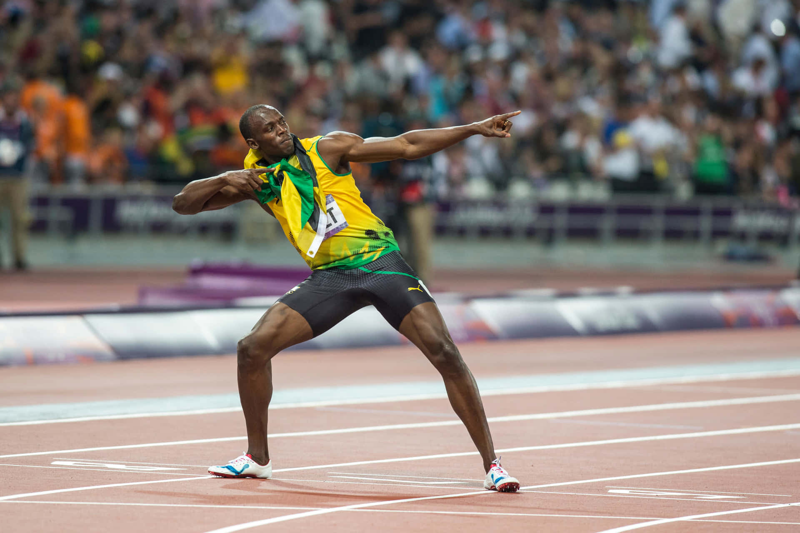

Footwear has changed quite a lot over time, and many of these changes brought pretty clear benefits like better comfort and support. Today, however, one of the biggest debates in footwear focused on performance shoes and in particular running shoes with advanced foam or carbon plates meant to give athletes a competitive advantage. At first this might seem like a natural extension of the evolutionary cycle discussed in part 1 with athletic shoes slowly becoming more specialized. For this particular conversation the question has shifted to, how much technological help should athletes be allowed to receive from their shoes? The disagreement here essentially involves two groups. The first side is the athletes, brands, and supporters who believe the innovation of athletic footwear is a fair and exciting part of sports. On the other side are the athletes, coaches, and sporting officials who think shoes have gotten to a point where they offer too much help and risk turning certain athletic competitions into a game of who has the better, more innovative equipment as opposed to who’s the superior athlete. The stakes are pretty high in this debate because even a small advantage could change race results, records, and careers. As footwear technology continues to develop, more disagreements over what counts as fair seem inevitable.
Supporters argue that new shoes are simply the next step in a long history of innovation. From the wooden last to Bowerman’s waffle sole. Every significant moment and advancement to footwear involved the improvement of movement or comfort. To these people, modern technology like carbon plates or responsive foams are no different. Companies invest very heavily into research that pushes the entire industry forward and athletes depend on any legal advantage they might be able to gain. These shoes help to reduce injury, maintain athletic form, and improve efficiency which is very significant in long races. This group is of the belief that innovation shouldn’t be restricted unless it clearly breaks rules. They say athletes still need extremely disciplined training habits and discipline in order to win. Supporters also think banning certain shoes would hurt athletes that might rely on equipment to stay competitive. In their minds, advanced footwear makes the sport more accessible and not less. Ultimately, supporters feel their side should and will win because progress has always shaped athletics. Equipment in many sports evolves, yet running shoes oftentimes receive strong resistance. They believe innovation keeps sports exciting and reflects human creativity. to achieve.
Critics argue that modern performance shoes give way too much assistance and make it harder to differentiate between the ability of the athlete and the technology. Some studies suggest certain shoes are able to improve one's running ability in ways that go far beyond the gains normal equipment offers. For skeptics of the new technology, this new stuff feels like an artificial boost that threatens to overshadow natural ability. They also argue that footwear can dramatically impact the outcomes of elite competition. In races where a fraction of a second can be the difference between finishing first or not, a shoe offering even a slight advantage can determine outcomes. This raises concerns about fairness and whether previous records should stand when equipment plays such a significant role in result. Critics also warn that unequal access to expensive new gear creates a gap between athletes who might have a sponsorship and those who don’t. This side thinks rules are extremely necessary to protect the integrity of competition and feels without limits the identity of the sport could drift away from athletic performance and towards technological advantage.

Both sides make reasonable arguments. Supporters see innovation as a natural step in the evolution of footwear, while critics worry too much about the idea that assistance might interfere with fairness. After taking a very close examination of both sides, I think a balanced approach to the argument would be best. Footwear should and naturally will continue to improve and evolve, but within clear limitations so athletes remain the primary determination of results. Innovation has always shaped footwear, but human performance should still be the center of sports.